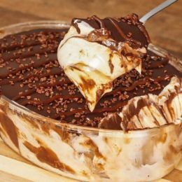

Dessert: Rezepte für feinen Nachtisch - [ESSEN UND TRINKEN]
2021.06.21 14:29

Rubriken Rezepte Pizzakunst Genuss - leckere Ideen für jeden Tag Schnell was Gutes Sommer-Rezepte Tomatensuppe Bruschetta Saltimbocca Vegane Rezepte Schnell & vegan Veganer Brunch Veganes mit Tomaten Veganes mit Auberginen Leichte Rezepte Leichte Sommerrezepte Leicht & schnell Leichte Salate Leichte Desserts Low Carb Low Carb im Sommer Low Carb Salate Low Carb & vegetarisch Low Carb Desserts Vegetarische Rezepte Vegetarische Sommergerichte Vegetarische Salate Vegetarisches mit Ziegenkäse Schnell & vegetarisch essen&trinken Für jeden Tag Einfache Hauptgerichte Leckere Beilagen Süßes & Desserts Kindergerichte Thermomix® Rezepte Fingerfood für Thermomix® Low Carb für Thermomix® Nachtisch für Thermomix® Brunch für Thermomix® Schnelle Rezepte Schnelle Sommer-Rezepte Schnelle Mittagessen 20-Minuten-Rezepte 30-Minuten-Rezepte Tim Mälzer Rezepte Tims Sommer-Rezepte Tims gefülltes Gemüse Avocado-Allerlei Tims Rezepte mit Hack Desserts Dessert-Klassiker Panna cotta Parfait Milchreis Eis selber machen Fleisch Rezepte Steak Schnitzel Hackfleisch-Rezepte Hähnchen-Rezepte Audiocooking Suche Neuste Rezepte Gewinnspiele Rezept-Archiv Grillen Grillbuffet Grillspieße Vegetarisch grillen Beilagen zum Grillen Stockbrot Salat Kartoffelsalat Nudelsalat Couscous-Salat Bulgursalat Dips Tzatziki Guacamole Kräuterbutter Saucen zum Grillen Grill-Tipps Lachs grillen Spargel grillen Pulled Pork Video: Bratwurst Grillen Archiv Getränke Cocktails Alkoholfreie Cocktails Aperol Spritz Mojito Gin Tonic Kaffee Eiskaffee Griechischer Frappé White Russian Kaffeesorten Tee Eistee selber machen Chai Matcha Teesorten Alles für die Hausbar Wodka Whisky Rum Gin Trends Nachhaltiger Genuss Nachhaltige Küchengeräte Regionale Küche Die grüne Seite Nose to tail Outdoor-Pizzaofen Zero Waste Küche e+t Food-Shop e+t Weinpaket Food-Trends One Pot Pasta Craft Beer Goldene Milch Ramen essen und trinken Reisewelt Selbstgemacht Kimchi Gin selber machen Senf selber machen Mayonnaise selber machen Endlich wieder Spargel! Tipps Video Kochschule Nudeln richtig kochen Fisch braten Artischocken zubereiten Pesto selber machen Video Rezepte Einfach lecker Rikes-Backschule Just vegan mit Nicole Just Fabios Kochschule Wie macht man ? Joghurt selber machen Step by Step: Cannelloni Step by Step: Carpaccio Step by Step: Schnitzel Backschule Kokos-Himbeer-Torte Cheesecake mit Kirschen Geeiste Baiserrolle Aprikosen-Bienenstich Backen Einfach & Schnell Cookies-Rezepte Waffelteig Pfannkuchenteig Muffins Torten Erdbeertorte Prinzessinnentorte Schokoladentorte Schwarwälder Kirschtorte Kuchen Erdbeerkuchen Zwetschgenkuchen Zitronenkuchen Käsekuchen Herzhaftes Quiche Brot selber backen Pizza selber machen Herzhafte Tarte Gesund Superfood Quinoa Kurkuma-Rezepte Leinsamen Avocado Gesunde Rezepte Gesundes Frühstück Gesundes Mittagessen Gesundes Abendessen Gesunde Snacks Gesund Essen Hirse Gesundes im Päckchen Smoothies Clean Eating Rezepte Gesunde Wochenpläne Frühling Sommer Herbst Winter Gutscheine OTTO Gutscheine Baur Gutscheine Ebay Gutscheine Alle Gutschein Shops Vergleiche Abo Suche Services Aboshop Gewinnspiele Audiocooking Podcast Newsletter bestellen Kochbuch Folgen Sie Essen & Trinken auf Facebook Pinterest Instagram Impressum + Kontakt AGB Presse Werbung Datenschutzhinweise Datenschutz-Einstellungen Über uns Rezepte Grillen Getränke Trends Tipps Backen Gesund Gutscheine Vergleiche Abo Suche Dessert
Dessert: Rezepte für feinen Nachtisch
Dessert: Rezepte für feinen Nachtisch
Das Dessert krönt ein Menü und überrascht Gäste oder Familie nach einem gelungenen Abendessen. Hier finden Sie eine große Auswahl an tollen Dessert-Rezepten: von Variationen im Glas über Cremes, Mousse und Kuchen bis hin zu fruchtigen, saisonalen Ideen. Hier finden Sie den besten Nachtisch!
Inhaltsverzeichnis
Dessert-Rezepte: Top 5 Weitere Dessert-Rezepte Dessert mit Früchten Desserts mit besonderen Zutaten Kuchen und Gebäck als Dessert Desserts nach Jahreszeiten
Dessert-Rezepte: Top 5
Schoko-Sahne-Pudding
(50)
25 Min. 520 kcal Echte Schokolade sorgt für den Suchtfaktor. Wer keine Puddingformen hat, nimmt Tassen.
Tiramisù
(37)
30 Min. 580 kcal
Kaffee-Panna-cotta mit Pinienkern-Karamellsauce
(168)
45 Min. 470 kcal Der obligatorische „Kaffee danach“ - als feine Panna cotta. Das Toffee wird als Sauce mit gerösteten Pinienkernen serviert.
Vanille-Parfait
(145)
30 Min. 358 kcal
Quark-Grieß-Auflauf
(60)
40 Min. 301 kcal Ganze 10 Minuten braucht es, bis die rote Grütze fluffig zugedeckt ist. Dann nur noch ab in den Ofen
Weitere Dessert-Rezepte
Beim Dessert hat jeder andere Vorlieben. Manche bevorzugen cremige Desserts , für andere soll es lieber leicht und fruchtig sein, Kinder freuen sich über Waffeln oder Pfannkuchen. Hier finden Sie süße Rezepte für jeden Geschmack!
Leichte Desserts
26 Bilder In der leichten Küche sind auch süße Desserts erlaubt, ohne, dass die geschmackliche Vielfalt zu kurz kommt! Diese Rezepte treffen jeden Geschmack. Jedes Dessert hat max. 250 kcal pro Portion.
Dessert im Glas
35 Bilder Desserts im Glas serviert sehen besonders hübsch aus und lassen sich toll vorbereiten. Entdecken Sie hier feine Dessert-Rezepte mit Frucht, Schokolade, Cremes oder Kuchen – alle im Glas angerichtet.
Schnelle Desserts
31 Bilder Für diese leckeren Desserts benötigen Sie nicht mehr als 30 Minuten. Wie wäre es auf die Schnelle mit Vanille-Ricotta mit Orangenfilets, Kaffeecreme oder buntem Trifle?
Italienische Desserts für Gäste
24 Bilder Süßes Finale! Natürlich mit Tiramisu, Panna-cotta, Ricotta mit Honig und Mandeln oder einer anderen süßen Spezialität aus Italien. Alle Desserts schmecken auf jeden Fall himmlisch gut.
Dessert: Klassiker & Varianten
27 Bilder Immer wieder ein süßes Highlight nach dem Essen: Hier finden Sie Rezepte für Mousse au Chocolat, Honig-Birnen mit Mascarpone, Himbeer-Kokos-Sorbet, Tiramisu, Crumble und mehr.
Parfait
34 Bilder "Parfait" bedeutet auf französisch "vollkommen, hervorragend". Wie treffend: Parfait ist eine halbgefrorene Verführung! Probieren Sie unsere köstlichen Parfaitrezepte.
Pudding
25 Bilder Vielleicht liegt es daran, dass er so sehr an die Kindheit erinnert: Pudding tut gut und schmeckt! Unsere Puddings sorgen auch mal mit Whisky, Cappuccino, Kokos oder Eierlikör für kulinarische Überraschungsmomente.
Cremes & Mousse
35 Bilder Diese Desserts zergehen auf der Zunge: Entdecken Sie Cremes und Mousses, die wahlweise mit Frucht, Kaffee, Quark und weiteren leckeren Zutaten zubereitet werden.
Rezepte für süße Pfannkuchen
22 Bilder Pfannkuchen lassen sich gefüllt oder in Kombination mit Obst wunderbar als Dessert reichen. Da freut sich die ganze Familie!
Heiße Desserts
34 Bilder Sie sind heiß begehrt: Zum Nachtisch passen unsere heißen und warmen Desserts besonders gut. Probieren Sie das warme Schoko-Küchlein mit Karamellkern, Pfirsich-Cobbler mit Brezelstreuseln oder Erdbeergratin.
Dessert mit Früchten
Jeder hat eine andere Lieblingsfrucht: Entdecken Sie hier leckere Desserts mit Ananas , Erdbeeren und Zwetschgen oder bereiten Sie gleich einen bunten Obstsalat zu.
Dessert mit Rhabarber
32 Bilder Das Beste zum Schluss: Kosten Sie himmlische Rhabarber-Desserts. Rhabarber-Parfait, Rhabarber-Baiser-Auflauf und Rhabarbergrütze mit Quarkcreme bilden den perfekten Abschluss eines gelungenen Menüs.
Dessert mit Erdbeeren
35 Bilder Ein Nachtisch geht immer! Vor allem, wenn er so süß und fruchtig ist wie diese Desserts mit Erdbeeren. Genießen Sie Erdbeergrütze mit Hugo-Zabaione, Parfait und Erdbeereis. Göttlich!
Obstsalat
24 Bilder Obstsalat ist eine der einfachsten Wege einen köstlichen Nachtisch zu zaubern. Entdecken Sie hier köstlich-vielfältige Obstsalat-Rezepte: Obstsalat in Vanille-Limetten-Sirup, Südfruchtsalat mit Chia oder Melonensalat.
Dessert mit Ananas
35 Bilder Wenn die Südfrucht frisch auf den Teller kommt, ist sie im Aroma unschlagbar. Entdecken Sie hier Rezepte, die die Ananas in ein köstliches Dessert verwandeln.
Dessert mit Orangen
32 Bilder Wenn Orangen im Winter Hochsaison haben, sind sie auch in Desserts besonders beliebt. Hier finden Sie Inspiration um Ihren Orangen einen süßen Kick zu verleihen.
Dessert mit Himbeeren
33 Bilder Himbeeren erfrischen an heißen Sommertagen. Tauchen Sie ein in die köstliche Welt unserer Himbeer-Desserts und entdecken Sie Ihren sommerlichen Favoriten.
Dessert mit Zwetschgen
31 Bilder Aus Zwetschgen lassen sich köstliche Nachspeisen zaubern. Sie veredeln Crêpes, schmecken traumhaft mit Zimtcreme oder als fruchtiges Tiramisu. Probieren Sie unsere süßen Dessertverführungen mit Zwetschgen.
Desserts mit besonderen Zutaten
Entdecken Sie hier Desserts mit leckeren Zutaten: Mit Schokolade, Karamell, Quark oder auch fruchtiger Grütze lassen sich köstliche Desserts zaubern und machen Ihre Gäste garantiert glücklich.
Dessert mit Schokolade
35 Bilder Aber bitte mit Schokolade! Zum Nachtisch verzaubern uns diese schokoladigen Kreationen: Schoko-Creme mit Rotwein-Sabayon, Schoko-Cantuccini-Dessert und Schoko-Panna-Cotta.
Dessert mit Karamell
36 Bilder Alle lieben Karamell! Süß, intensiv und vielseitig: Karamell passt zu Desserts, Kuchen und Gebäck. Entdecken Sie hier köstliche Rezepte für Mokka-Mousse mit Toffee-Sauce, Mango-Karamell-Schichtspeise oder Flan mit Karamell.
Dessert mit Quark
36 Bilder Quark ist eine leichte Alternative zu Sahne oder Mascarpone. Probieren Sie unsere himmlisch leichten Quark-Desserts mit Obst, Erdbeeren oder auch Rhabarber.
Dessert mit Grütze
28 Bilder Frisch, fruchtig und leicht zubereitet: Eine Grütze ist schnell gemacht und passt toll zu Kuchen, Cremes, Eis oder einfach so. Hier finden Sie leckere Rezepte für Desserts mit Grütze.
Kuchen und Gebäck als Dessert
Kleine Kuchen, Gebäck und Pralinen eignen sich hervorragend als Dessert und passen toll als Menü-Abschluss. Entdecken Sie hier passende Rezepte.
Cupcakes
25 Bilder Immer beliebter: Cupcakes sind kleine Kuchen mit einer süßen Creme als Topping. Hier finden Sie leckere Rezepte für Cupcakes, zum Beispiel Möhren-Cupcakes oder Kokos-Ingwer-Cupcakes.
Kleine Kuchen
33 Bilder Wir wäre es mit einem kleinen Kuchen als Mitbringsel zu einer Essenseinladung? Im Glas oder in Dosen gebacken, eignen sich kleine Kuchen wunderbar als selbst gemachte Aufmerksamkeit. Hier finden Sie tolle Rezepte dafür.
Kekse & Pralinen
32 Bilder Dessert im Kleinformat: Manchmal reicht eine süße Kleinigkeit nach einem üppigen Essen. Reichen Sie zum Dessert doch einfach Pralinen, Konfekt oder Plätzchen.
Weitere Nachtisch-Ideen
Tiramisu: Süßes aus Italien Tiramisu
13.08.2020 Tiramisu ist das wohl bekannteste italienische Dessert. Probieren Sie eines unserer zahlreichen Tiramisu-Rezepte mit Mango oder weißer Schokolade.
Rezeptklassiker: Panna Cotta
13.08.2020 Panna Cotta ist ein Klassiker und ganz einfach zuzubereiten. Neben Sahne ✔ ,Zucker ✔ und Gelatine ✔ lässt er sich mit Schoko oder Früchten verfeinern.
Mousse au chocolat
13.08.2020 Schaumige Konsistenz, kräftiger Schokogeschmack: Wir erklären Schritt für Schritt, wie aus Schokolade, Eiern und Sahne eine feine Mousse au Chocolat entsteht.
Rezeptklassiker Crème brûlée
13.08.2020 Crème brûlée ist eine traditionelle französische Süßspeise. Wie die köstliche Karamellkruste auf der Vanille-Creme gelingt, erfahren Sie hier.
Rezeptklassiker: Rote Grütze
13.08.2020 Rote Grütze ist ein herrlich erfrischendes Sommerdessert. Mit frischen Früchten schmeckt rote Grütze am besten. Vanillesauce ergänzt ihre fruchtig-säuerlichen Aromen perfekt.
Rezeptklassiker Pavlova
13.08.2020 Pavlova ist eine Desserttorte aus Baiser. Lesen Sie hier, womit sie gefüllt und wie sie zubereitet wird. Wir haben auch leckere Pavlova Rezepte für Sie.
Desserts nach Jahreszeiten
Damit Sie je nach Jahreszeit das passende Dessert servieren, haben wir hier saisonale Rezepte für Sie.
Weihnachtsdesserts: Rezepte & Ideen
13.08.2020 Wissen Sie schon was es dieses Jahr an Weihnachten zum Nachtisch gibt? Falls nicht, werden Sie hier garantiert fündig! Wir haben wunderbare festliche Dessert-Rezepte für Sie: mit Schokolade, Gewürzen oder Früchten, für Parfaits, Torten oder Cremes. Wählen Sie nur noch aus und machen Sie Ihre Gäste glücklich!
Frühling-Dessert
34 Bilder Entdecken Sie Desserts mit Rhabarber, Erdbeeren oder Waldmeister. Nutzen Sie die Saison und verarbeiten Sie die leckeren Frühlingsboten zu einem schmackhaften Dessert.
Sommer-Dessert
30 Bilder Genießen Sie die süßen und fruchtigen Seiten des Sommers! Pfirsich-Joghurt-Mousse mit Himbeeren, Erdbeer-Welfenspeise oder Limoncello-Panna-Cotta mit Obst-Salsa – einfach köstlich!
Herbst-Dessert
32 Bilder Im Herbst gibt es viel frisches Obst im Dessert! Freuen Sie sich auf süß-fruchtige Desserts wie pochierten Cassis-Apfel, Tiramisu mit Karamellsauce oder Double Chocolate Crumble.
Winter-Dessert
32 Bilder Für unsere winterlichen Desserts kommen Schokolade und exotische Früchte zum Einsatz. Diese süßen Kreationen müssen Sie unbedingt probieren!
Desserts für Weihnachten
39 Bilder Orangencreme mit Zitruskompott, Grießknödel mit Quittenmus und Krokant, Mohn-Mousse mit exotischem Obstsalat und Mousse au Chocolat versüßen uns das Ende vom Weihnachtsessen.
Desserts für Ostern
32 Bilder In der Osterzeit gibt es als Dessert leckeres Hefegebäck oder Köstlichkeiten mit Eierlikör. Und Muffins sowie der obligatorische Schokohase dürfen natürlich auch nicht fehlen.
Dessert: Was ist das?
Ein Dessert ist die perfekte Ergänzung nach einer Hauptspeise. Meist ist sie süß und rundet das Essen ab. Besonders beliebt sind Desserts im Rahmen eines 3-Gänge-Menüs, wo das Dessert den Abschluss bildet. Oft sind Ostern oder Weihnachten tolle Anlässe für ein leckeres Dessert.
Welche Desserts gibt es?
Die Dessertauswahl ist vielfältig. Beliebt sind Desserts mit Schokolade oder Obst, zum Beispiel in Kombination mit Quark. Aber auch Nüsse können eine tolle Ergänzung sein. Beliebte Klassiker sind Pudding, Eis, Tiramisu, Mousse au chocolat oder Panna Cotta. Doch auch kleine Kuchen, Muffins oder Pralinen eignen sich wunderbar für den süßen Abschluss. Der Vorteil daran ist, dass Gebäck und Pralinen meist nicht gekühlt werden müssen.
Welche Desserts lassen sich gut vorbereiten? Besonders Cremes, Pudding oder Parfait lassen sich gut am Tag vorher vorbereiten. Servieren Sie diese mit frisch aufgeschnittenem Obst oder Schokosauce und das Dessert ist perfekt. Achten Sie hierbei am besten auf die Angaben im Rezept.
Käse als Dessert
Wer lieber ein herzhaftes Dessert zum Nachtisch mag, liegt mit Käse genau richtig. Sie können zum Beispiel eine bunte Käseplatte mit unterschiedlichen Käsesorten, wie Gouda, Brie oder Gruyère zusammenstellen. Ein paar Trauben oder frische Feigen runden die Platte ab.
Noch mehr Leckeres
Der erste Eindruck zählt Vorspeise
13.08.2020 Sie planen ein Menü, mit denen Sie Familie und Freunde verwöhnen möchten? Lassen Sie sich von unseren besten Rezeptideen für gelungene Vorspeisen inspirieren. Sie schmecken und versprechen Lust auf mehr!
Hauptgerichte
13.08.2020 Hauptgerichte sind das Herzstück eines jeden Essens. Vegetarisch, mit Fleisch, Fisch oder doch lieber ein Klassiker? Viele Anregungen und Rezepte finden Sie hier.
Kuchen: die leckersten Rezepte
13.08.2020 Diese Kuchen-Rezepte passen immer: Ob einfache Kuchen oder besondere, klassische Kuchen oder neue Ideen – verwöhnen Sie sich und Ihre Lieben mit einem leckeren Kuchen!
Dessert Archiv
06.09.2020
Jetzt unser werbefreies Premiumportal testen: audiocooking.de ist Kochen mit Voice-Funktion!
24.09.2020
essen & trinken Newsletter - kostenlos anmelden
Anzeige
essen & trinken Gewinnspiele – mitmachen und gewinnen!
22.09.2020 Gutscheine
OTTO Gutscheine
eBay Gutscheine
baur Gutscheine
Amazon Gutscheine
Galeria Gutscheine
Saturn Gutscheine
LIDL Gutscheine
NIKE Gutscheine
Heine Gutscheine
Deichmann Gutscheine
Christ Gutscheine
myToys Gutscheine
Boden Gutscheine
JD Sports Gutscheine
Galaxus Gutscheine
mömax Gutscheine
XXXLutz Gutscheine
JAKO-O Gutscheine
PARSHIP Gutscheine
Eine Frage des Respekts: Rezepte von Kopf bis Schwanz